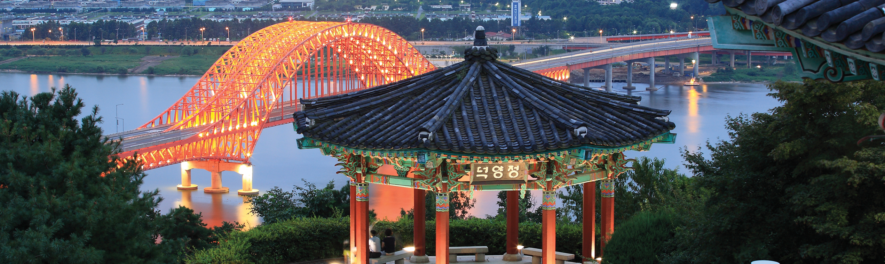

{kind=link}
{kind=link}
설립일자 : 2002년 12월 18일
개장일자 : 2005년 4월 29일
KINTEX는 정부와 지자체가 공동출자하여 설립한 국제 전시∙컨벤션 센터입니다.
KINTEX는 국내 최대인 10만㎡ 전시면적을 보유하고 있으며, 2025년 완공되는 제 3전시장으로 총 17만 8천㎡의 전시면적을 확보하여 세계 20위권 규모의 전시장으로 도약하고 있습니다.
이를 바탕으로 KINTEX는 동북 아시아 대표 전시장이자 동아시아 산업교류의 메카로 발돋움하고 있으며, 대한민국을 전시∙컨벤션 강국으로 이끌어 나가고 있습니다.
KINTEX는 경기도, 고양시, 코트라의 출자로 이루어진 국제 전시장으로 경제 활성화와 일자리 창출, 지역 사회공헌에 기여하고 있습니다.
특히 KINTEX는 대정부와의 긴밀한 협력체계 구축을 통해 전시 지원산업 육성 및 첨단 전시기술기반 산업 유치 뿐 아니라 시민 참여를 통한 지자체 문화관광 여건 개선 등 대한민국 MICE 산업 발전을 위해 최선을 다하고 있습니다.
KINTEX는 사회공동체(Social)와 환경(Environment) 등 비즈니스 전 과정에서 비재무적인 요소를 고려해 책임있는 의사결정(Governance)을 실천하는 ‘ESG 경영에 앞장서고 있습니다.
이러한 KINTEX의 노력은 글로벌 전시장으로서 위상을 강화하고 동시에 국내 MICE산업의 대표 ESG 경영 표준모델을 정립함으로써 대한민국 MICE산업의 지속가능한 발전을 이끌고 있습니다.
관광명소
고양시의 관광명소들


<고양명소>
킨텍스 KINTEX
위치 : 경기도 고양시 일산서구 킨텍스로 217-60
<산/사찰>
정발산(鼎鉢山)
해발 : 88m
면적 : 63만 7,164.2㎡
명칭 : 정발산중앙공원(鼎鉢山中央公園)
정발산은 낮은 높이에도 불구하고 일산신시가지 중에서 가장 높은 일산의 주산이며 정상에서는 일산신시가지 및 호수공원이 한눈에 바라다
보입니다.
정발산의 수종은 소나무,잣나무등의 고유 재래수종이 대부분을 이루고 있으며 면적 64,000평의 대규모 시민공원이 조성되어 있습니다.
정발산공원은 주민의 휴식및 문화공간으로 활용되고 있으면, 동서남북 어느 방향에서나 산책로를 이용하여 정상에 오를 수 있습니다.
정발산의 외부는 조경지로 폭포, 자연학습원, 약수터, 연못정원등 조경시설물을 설치하여 시민의 산책및 운동시설로 이용할수 있도록 하였으며,
정상을 제외한 정발산 내부는 자연림으로 존치, 원래의 식생이 보존되어 꿩, 다람쥐는 흔히 볼 수 있을만큼 다량 서식하고 있으며, 토끼, 올빼미류, 오소리등이 발견되기도 합니다.
현재 정발산은 체육공원으로서의 역활을 하고 있습니다.
산중턱에는 각종 체육시설이 있으며 새벽에는 많은 분들이 기공체조및 산책길로서 정발산을 이용하고 있습니다.
정상에는 전통적인 루의 기법으로 지어진 평심루가 있으며 옛부터 산정상에서는 3년에 한번씩 도당굿이 벌어지고 있습니다.
위치 : 경기 고양시 일산동구 마두동 819
<공원/자연/기타>
호수공원
조성기간 : 1992년 12월 31일 ~ 1995년 12월 28일
일산호수공원은 일산신도시 택지개발사업과 연계하여 조성한 근린공원으로서 국내 최대의 인공호수를 만들어 도시인이 접할 수 없는 자연생태계를 재현하고 다양한 주변경관 및 호수를 이용한 레크레이션 공간을 제공하고 있습니다.
특히 호수를 중심으로 한 4.7km의 자전거도로와 메타세콰이어길 등 9.1km의 산책로는 시민들이 특별히 좋아하는 장소이며,
그 밖에 생태자연학습장, 조형예술품, 선인장전시관 등이 다양한 생태문화시설이 조성되어 있습니다.
또한 매년 고양국제꽃박람회, 가을꽃축제, 호수꽃빛축제 등이 개최되는 등 국내는 물론 세계적인 명소로 자리잡아 가고 있는 공원입니다.